デジタイザの使い方
概要
デジタイザは、グラフの画像からデータを取得するのに役立ちます。Originにグラフの画像ファイルをインポートし、データポイントを1つずつ数値化することが可能です。
学習する項目
- デジタイザを使ってグラフの画像からデータをキャプチャする
- 選択した点の位置を修正する
- 余分な点を削除する
ステップ
3.1 データポイントのキャプチャ
- メインメニューからツール：デジタイザを選択し、デジタイザダイアログを開きます。
- ダイアログのツールバーよりインポート
 ボタンをクリックして、<Origin
インストールフォルダ>\Samples\Import and Export\にあるDigitizer_image.png
を選択します。画像がインポートされます。片方が赤色で片方が青色のXY軸が2組表示されます。
ボタンをクリックして、<Origin
インストールフォルダ>\Samples\Import and Export\にあるDigitizer_image.png
を選択します。画像がインポートされます。片方が赤色で片方が青色のXY軸が2組表示されます。
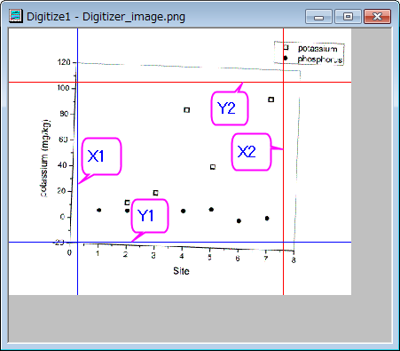
- イメージの回転ボタンをクリックし、さらにボタンをクリックして、反時計回りに少し回転させます。回転増分は、左右回転(<<,
>>)の角度増分(度)編集ボックスで指定します。
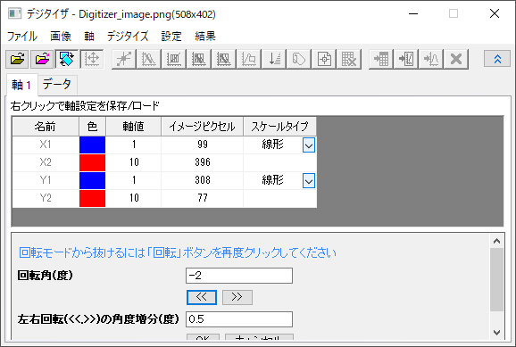
グラフイメージの傾きがなくなり、軸ラインと平行になったら、もう一度イメージの回転ボタンをクリックすると、回転モードが終了します。
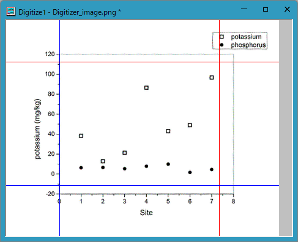
- ダイアログの軸の編集
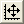
ボタンをクリックします。マウスを使用し、各軸の最小値と最大値を読み取れるように、2組の軸ラインをドラッグして移動します。1つのラインが選択されているとき、ダイアログの対応する行も選択されます。軸値の列に適切な座標値(0,
8, -20, 120) を入力します。
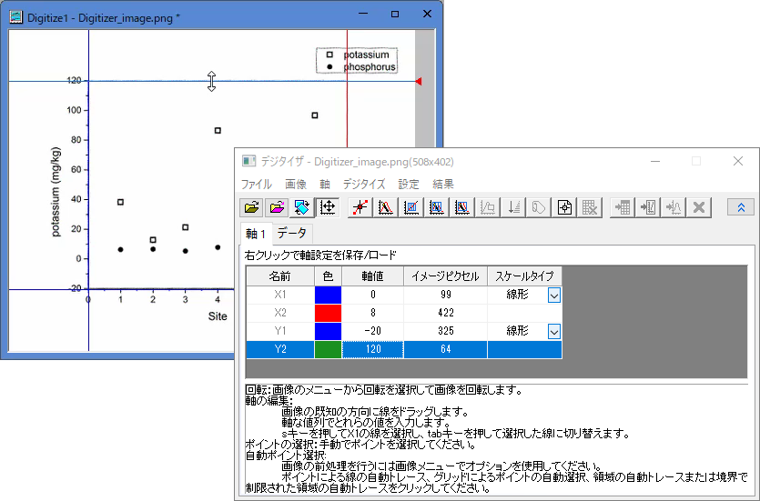
- 軸を設定したら、手動でポイントを選択
 ボタンをクリックします。カーソル
ボタンをクリックします。カーソル をphosphorus（塗りつぶされたシンボル）上に移動して、それぞれの点を順番にダブルクリック（またはシングルクリックとEnterキー）して確定します。GetPointsダイアログは座標値を表示し、データ表示ウィンドウは画像のピクセルを表示します。
をphosphorus（塗りつぶされたシンボル）上に移動して、それぞれの点を順番にダブルクリック（またはシングルクリックとEnterキー）して確定します。GetPointsダイアログは座標値を表示し、データ表示ウィンドウは画像のピクセルを表示します。
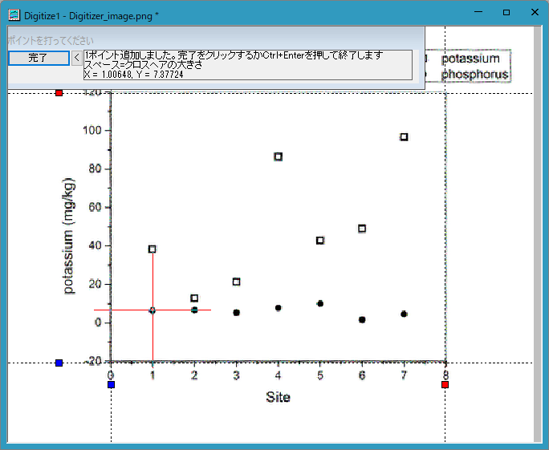
- 全てのシンボルを追加できたら、完了をクリックします。
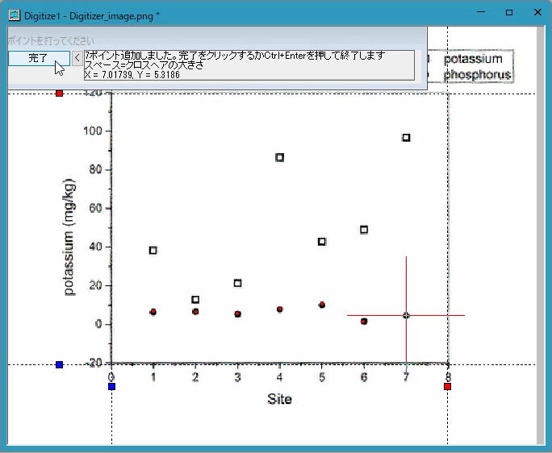
- データに行く
 ボタンをクリックすると取得したデータ座標が入力されたワークシートが開きます。
ボタンをクリックすると取得したデータ座標が入力されたワークシートが開きます。
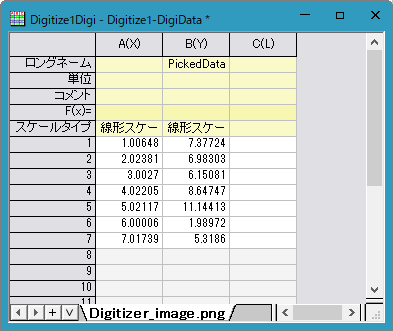
- イメージに行く
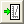
ボタンをクリックすると元の画像に戻ります。新しい線ボタンをクリックして、次のデータ（potassium：塗りつぶされていないシンボル）を取得します。取得したデータ座標が入力されたワークシートには新しく2行追加されています。
- 手動でポイントを選択ボタンボタンをクリックして、塗りつぶされていないシンボルを手順5、6のように選択します。
- データに行くボタンをクリックするとワークシートに2種類のデータセットが表示されているのがわかります。
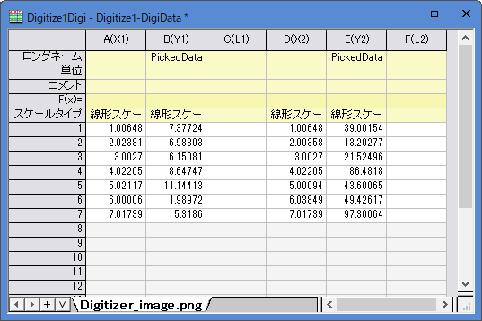
- イメージに行くボタンをクリックします。インポートした画像ファイルに移動します。グラフに行く
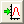
ボタンをクリックすると、新しくグラフウィンドウが開き、取得したデータ座標のグラフを表示します。
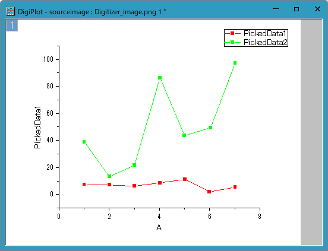
- デジタイザダイアログを閉じると、デジタイザ
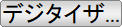
ボタンが画像上に表示されます。このボタンをクリックすると、デジタイザダイアログを再度開けます。
追加したポイントの移動と削除
上記のセクションでは、画像から簡単にデータを取得できました。しかし、下図のポイントAやBのように、選択したポイントの位置が誤っていたり、余分に選択してしまった場合、それらを削除することができます。
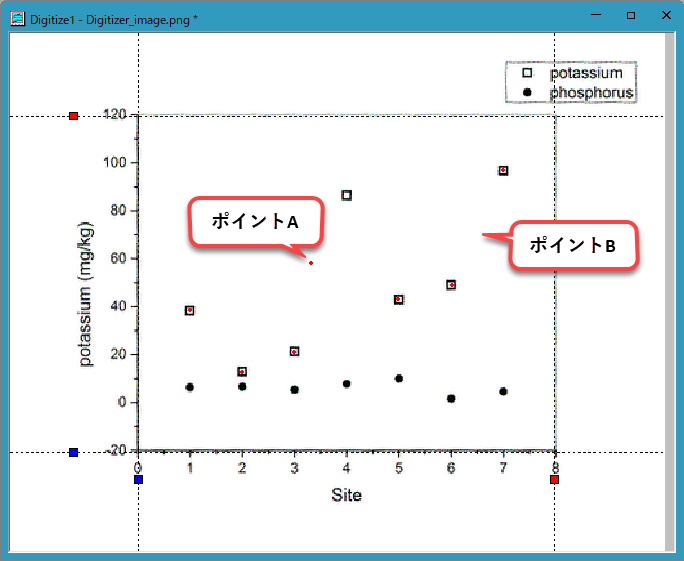
- ポイントAの位置を修正するには、ポイントをクリックしドラッグして、正しい位置にします。または、ポイントを選択してキーボードの矢印キーを使っても修正できます。
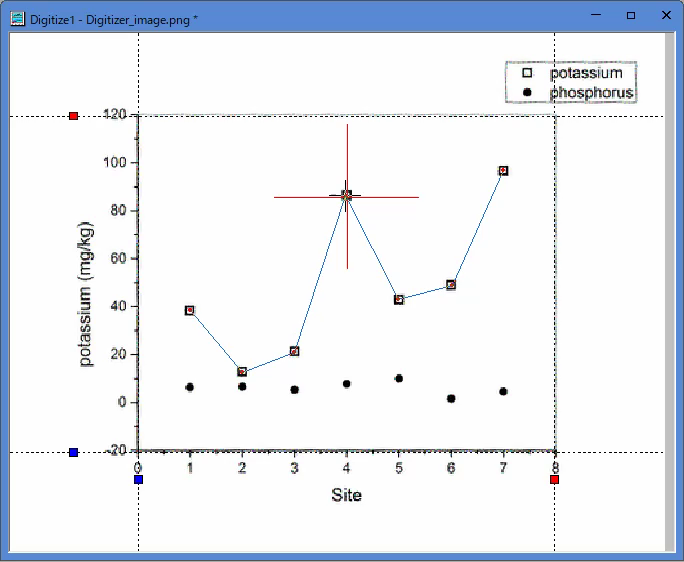
- ポイントBを削除するには、ポイントをクリックし右クリックして、コンテキストメニューから削除を選択します。または、ポイントを選択してキーボードのDeleteキーを使っても修正できます。